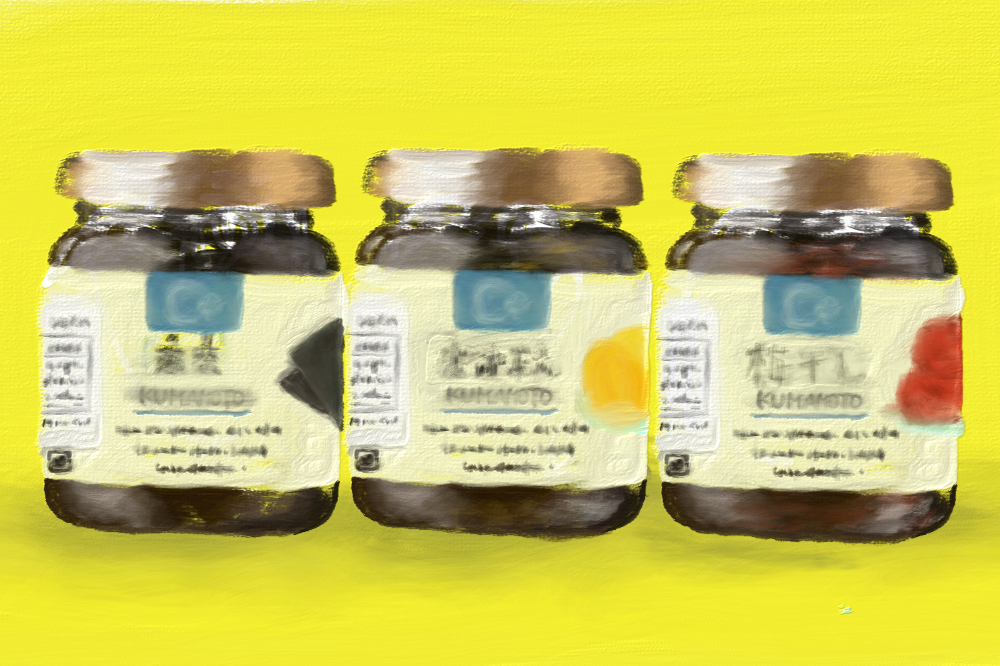
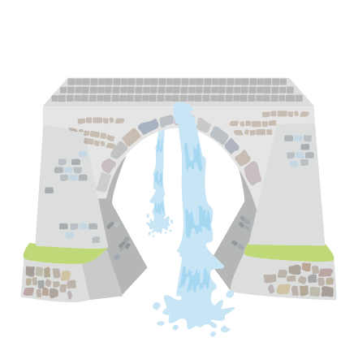

<DOCUTYPE html>
   <html jang="ja">

   <head>
      <meta charset="utf-8">
      <meta name="viewport" content="width=device-width,initial-scale=1.0"/>
      <link rel="stylesheet" href="https://cdn.jsdelivr.net/npm/destyle.css@1.0.15/destyle.css" >
      <link rel="stylesheet" href="https://cdnjs.cloudflare.com/ajax/libs/slick-carousel/1.9.0/slick-theme.min.css">
      <link rel="stylesheet" href="https://cdnjs.cloudflare.com/ajax/libs/slick-carousel/1.9.0/slick.min.css">
      <link rel="stylesheet" href="css/style.css">
      <!-- <link rel="stylesheet" href="css/slide.css"> -->
      <link rel="stylesheet" href="css/responsive.css">
      <link rel="stylesheet" href="css/slider.css">
      <title>KARIYA MIO</title>
   </head>

   <body id="home">
      <header class="header01">
         <div class="logo">
            
         </div>
         <nav class="nav">
            <ul class="item">
               <li class="list" id="list"><a href="index.html">HOME</a></li>
               <li class="list"><a href="about.html">ABOUT</a></li>
               <li class="list"><a href="skill.html">SKILL</a></li>
               <li class="list"><a href="portfolio.html">WORKS</a></li>
               <li class="list"><a href="contact.html">CONTACT</a></li>
            </ul>
         </nav>
      </header>

      <main>
         <!-- スライドの外枠 -->
         <div class="slide-wrapper">
            <!-- スライド（コンテンツ） -->
            <ul id="slider">
               <li>
                  
               </li>
               <li>
                  
               </li>
               <li>
                  
               </li>
               <li>
                  
               </li>
               <li>
                  
               </li>
            </ul>
            <!-- 左右のボタン -->
            <span id="prev" class="prev"></span>
            <span id="next" class="next"></span>
            <!-- インジケーター -->
            <ul class="indicator" id="indicator">
               <li class="list"></li>
               <li class="list"></li>
               <li class="list"></li>
               <li class="list"></li>
               <li class="list"></li>
            </ul>
         </div>
         
      </main>
      <footer>
         <p>© 2024 KARIYA MIO</p>
      </footer>
      <script src="https://ajax.googleapis.com/ajax/libs/jquery/3.5.1/jquery.min.js"></script>
      <script src="https://cdnjs.cloudflare.com/ajax/libs/slick-carousel/1.9.0/slick.min.js"></script>
      <script src="js/slideshow.js"></script>
      

   </body>

   </html>